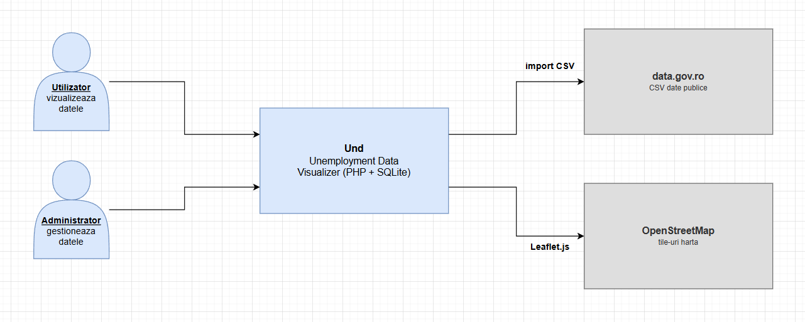
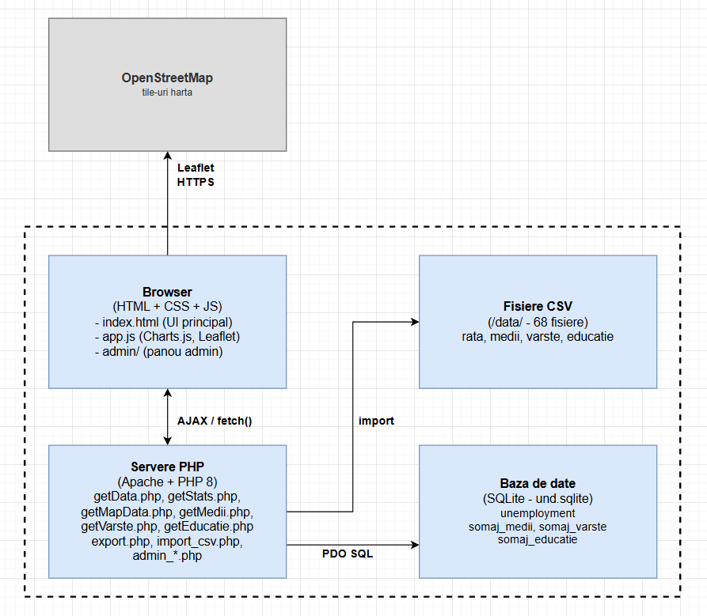
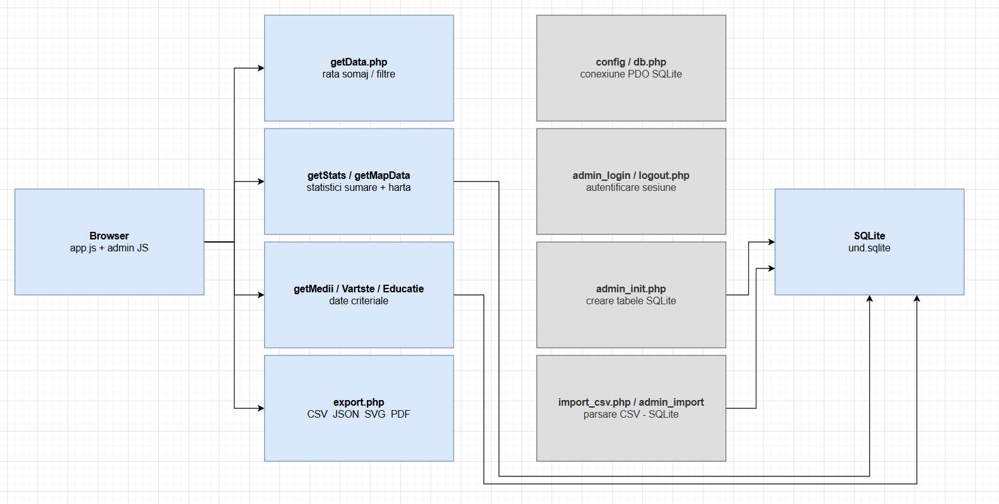

Datele privind rata șomajului sunt publicate lunar de ANOFM și disponibile pe data.gov.ro, însă sub o formă dificil de explorat pentru publicul general. Aplicația UnD oferă o interfață web interactivă care nu necesită cunoștințe tehnice, permițând oricui să filtreze și să compare aceste date pe mai multe criterii.
| ID | Descriere |
|---|---|
RF-01 | Vizualizarea datelor filtrate după județ și interval de timp (17 luni disponibile) |
RF-02 | Comparare multi-criterială: urban/rural, grupă de vârstă, nivel de educație |
RF-03 | Minimum 3 tipuri de grafice: bare, liniar, circular (plus bare grupate) |
RF-04 | Hartă coroplețică interactivă a României cu rata șomajului pe județe |
RF-05 | Export în CSV, JSON, SVG și PDF |
RF-06 | Modul de administrare: inițializare BD, import CSV, statistici tabele |
RF-07 | Statistici sumare: total șomeri, rată medie / maximă / minimă |
PDO::prepare(); XSS prevenit prin folosirea textContent în JavaScript și returnarea de JSON pur din APIfetch())month
Datele provin de pe data.gov.ro (ANOFM) și acoperă
ianuarie 2024 – mai 2025 (17 luni). Sunt stocate ca fișiere CSV în
directorul /data/ și importate în SQLite la inițializare prin
api/import_csv.php.
| Fișier CSV | Tabel SQLite | Câmpuri principale | Perioadă |
|---|---|---|---|
somaj_YYYY_MM_rata.csv |
unemployment |
judet, luna, numar_total, femei, barbati, rata, rata_feminina, rata_masculina | ian 2024 – mai 2025 |
somaj_YYYY_MM_medii.csv |
somaj_medii |
judet, luna, urban_total, urban_femei, rural_total, rural_femei | dec 2024 – mai 2025 |
somaj_YYYY_MM_varste.csv |
somaj_varste |
judet, luna, sub_25, v_25_29, v_30_39, v_40_49, v_50_55, peste_55 | dec 2024 – mai 2025 |
somaj_YYYY_MM_nivel-educatie.csv |
somaj_educatie |
judet, luna, fara_studii, primar, gimnazial, liceal, postliceal, profesional, universitar | dec 2024 – mai 2025 |
Aplicația urmează arhitectura clasică client–server, cu comunicare exclusiv prin apeluri AJAX asincrone. Nu se folosesc framework-uri pe nicio parte; tot codul rulează pe PHP cu PDO și SQLite pe server, respectiv JavaScript vanilla pe client.



/
├── admin/ ← modul administrare (HTML + PHP)
├── api/ ← endpoint-uri REST PHP
│ ├── getData.php, getStats.php, getMapData.php
│ ├── getMediiData.php, getVarsteData.php, getEducatieData.php
│ ├── export.php, import_csv.php
│ └── admin_login, admin_logout, admin_init, admin_import, admin_stats
├── config/db.php ← conexiune PDO SQLite
├── data/ ← 68 fișiere CSV (ANOFM)
├── database/und.sqlite
└── public/
├── index.html
├── report.html
├── css/style.css
└── js/app.js| Tip | Date vizualizate | Tab |
|---|---|---|
| Bar chart | Rata șomajului pe județe (luna cea mai recentă) | Rată |
| Line chart | Evoluție temporală a ratei medii | Rată |
| Pie chart | Distribuție femei / bărbați | Rată |
| Grouped bar | Urban vs. Rural pe județe | Urban/Rural |
| Pie chart | Total Urban vs. Rural agregat | Urban/Rural |
| Bar chart | Șomeri pe grupe de vârstă (agregat) | Vârste |
| Bar chart | Șomeri pe nivel de educație (agregat) | Educație |
Fiecare județ este reprezentat printr-un circleMarker poziționat la coordonatele
geografice ale județului. Culoarea fiecărui marker este calculată dinamic pe baza ratei
șomajului pentru luna curentă, folosind un gradient de la galben (rată mică) la roșu
(rată mare). Tile-urile provin de la OpenStreetMap via Leaflet.js.
export.php, cu filtrele active aplicatewindow.print() cu reguli @media print în CSSPDO::prepare() cu parametri legați; nicio valoare din input nu este interpolată direct în SQLtextContent (nu innerHTML), eliminând posibilitatea de injectare HTMLAplicația UnD acoperă cerințele proiectului: 17 luni de date, filtrare multi-criterială, 7 tipuri de grafice, hartă coroplețică, export în 4 formate și modul de administrare complet. Implementarea fără framework-uri a necesitat înțelegerea mecanismelor fundamentale: HTTP, AJAX, REST, SQL, sesiuni PHP și manipularea DOM-ului din JavaScript.